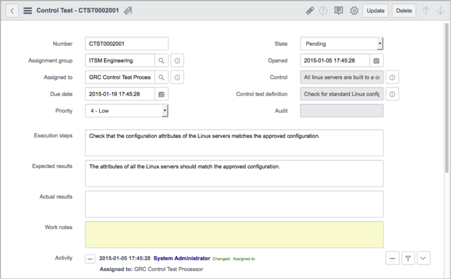

Control Test Definitions
| |
Note: This article applies to Fuji. For more current information, see GRC Control Tests and Definitions - Legacy at http://docs.servicenow.com
The ServiceNow Wiki is no longer being updated. Please refer to http://docs.servicenow.com for the latest product documentation. |
1 Overview
A control test definition determines how and when a control test is performed, including execution steps and expected results. You can configure a control test definition to gather supporting data from any table in the ServiceNow database using different condition types or through attestations sent to appropriate users.
Certification filters and templates simplify the selection of records to test, starting with the Dublin release. Certification filters provide the scope for test definitions by filtering a table for specific records. You then attach the filter to a template that tests specific attributes of the filtered records.
The control test definition includes the ability to define the remediation group that is automatically assigned to a remediation task if the control test instance state is set to Failure.
2 Creating a Control Test Definition
After you define a control, create control tests to gather documented evidence of whether the associated control is operating correctly. When you configure a control test definition to provide supporting data, you can select different methods of gathering that data.
- Navigate to GRC > Administration > Control Test Definitions.
- Click New.
- Fill in the top part of the form, as appropriate (see table).
- Click Submit to save the record or Execute now to save and execute this control test definition.
{kind=link}
| Field | Description |
|---|---|
| Definition ID | A unique identifier generated dynamically by the system. |
| Name | The name of the control test. |
| Duration | Defines the due date for an attestation or the elapsed time until this control test is marked passed or failed. For attestations, you can configure the duration in this form or in the Assessment Metric Type form. For recipient notification, If the duration is at least two days, the system deducts one day from the duration when notifying recipients of milestones. This allows time to review the attestation results before the due date expires. The default duration is 14 days. |
| Method | One of the following choices for determining the test assignee:
|
| Assign to group | Group assigned to this control test. This field is available only when the selected method is Assign to Group. |
| Assign to | User assigned to this control test. The choice list is limited to users whose role permits them to view and score control tests. This field is available only when the selected method is Assign to Individual. |
| State | A workflow field that indicates the state of the drafting process for this control test definition. If the state is Active, control test instances are dynamically generated based on this record's definition. A control test definition must be active before it can be executed. |
| Control | A reference to the control being enforced.
Note: Do not change the control in this record after the control test instance has been generated. If you need to change the control, create a new control test definition with the same settings and then select the new control. |
| Remediation group | Group assigned to the remediation tasks if a control test fails. |
| Escalate task | Check box to escalate the priority of the control test associated with this control test definition as the due date approaches. The escalation schedule is:
|
| Run | Frequency for generating control test instances. Choices are:
|
| Day | Day of the week that a control test instance is generated each week if Run is set to Weekly. Day of the month if Run is set to Monthly. |
| Time | The time that a control test instance is automatically generated if Run is set to Daily, Weekly, Monthly, or Periodically. |
| Repeat interval | A duration, in days and hours, between the automatic generation of control test instances if Run is set to Periodically. |
| Starting | The date and time control test instances are first generated if Run is set to Periodically. The only date and time a control test instance is generated if Run is set to Once. |
| Execution step | Description of this step in the process of satisfying the control. For example, if you are administering an attestation, the step might be to collect attestations and evaluate the results. |
| Expected result | The result that should occur after these tests. Describe how the results of test are used to support the control. |
| Collect supporting data | Indicator whether sample data should be taken from a particular table within the instance when the control test instance is generated. Select this check box to display additional fields for supporting data. |
2.1 Supporting Data
To provide supporting data in the Control Test Definition form, click Collect supporting data. This selection displays the Condition type field. Each condition gathers data using a different combination of fields. Choices for condition types are:
- Basic: Applies specific conditions to the table specified.
- Advanced: Uses condition collections to apply conditions to the table and to related tables.
- Template: Uses certification templates to apply conditions to the table specified.
- Attestation: Uses surveys administered to users and groups to collect data.
2.1.1 Basic Conditions
Basic condition types apply specific conditions to the table specified.
{kind=link}
The following fields are available with the Basic condition type:
| Field | Description |
|---|---|
| Data purpose | Purpose of the data being sampled. This selection influences how the control test is performed. Choices are:
|
| Table | Table from which to collect the data.
This field is read-only when Template is the Condition type. When you select a template to define test conditions, the table is set by the certification filter used in the template and cannot be changed. Filters and templates are available starting with the Dublin release. |
| Fields | List of fields whose values you want to evaluate when determining whether records match the conditions. |
| Sample size | An integer number of rows for a random sample. A sample size of zero returns all matching records. This field is available only if Data purpose is set to Support test execution. |
| Control test conditions | A condition builder that limits the sample data. This field is available only if Condition type is set to Basic. |
2.1.2 Advanced Conditions
Advanced condition types apply conditions to the table and to related tables with condition collections.
{kind=link}
The following fields are available with the Advanced condition type:
| Field | Description |
|---|---|
| Data purpose | Purpose of the data being sampled. This selection influences how the control test is performed. Choices are:
|
| Table | The table from which to collect the data.
Field is read-only when Template is the Condition type. When you select a template to define test conditions, the table is set by the certification filter used in the template and cannot be changed. Filters and templates are available starting with the Dublin release. |
| Fields | List of fields whose values you want to evaluate when determining whether records match the conditions. |
| In scope definition | Reference to a condition collection. For more information see Defining Advanced Conditions. |
| Configuration to retrieve | Method for using the Configuration reference field. Possible choices are:
For more information, see Defining Advanced Conditions. |
| Configuration | Condition collections to use. This field is available only if Configuration to retrieve is set to anything except None. |
2.1.3 Template Conditions
Template conditions use certification templates to apply conditions to the specified table. Select the template to use from the Template field. Templates are available for use in control tests starting with the Dublin release.
{kind=link}
The following fields are available with the Template condition type:
| Field | Description |
|---|---|
| Data purpose | Purpose of the data being sampled. This selection influences how the control test is performed. Choices are:
|
| Table | Table from which to collect the data. This field is read-only when Template is the Condition type. When you select a template to define test conditions, the table is set by the certification filter used in the template and cannot be changed. Filters and templates are available starting with the Dublin release. |
| Fields | List of fields whose values you want to evaluate when determining whether records match the conditions. |
| Configuration to retrieve | Method for using the Configuration reference field. Possible choices are:
For more information, see Defining Advanced Conditions. |
| Template | [Required] Certification template that defines conditions for this test definition. Only templates with an audit type of Compliance are available for selection. This field is available and mandatory when the value in the Condition type field is Template. For more information, see Certification Templates. Templates are available starting with the Dublin release. |
2.2 Defining Advanced Conditions
Set the Condition type to Advanced on control tests to define more flexible conditions using condition collections. Condition collections have one primary condition, which is applied to the selected table, and one or more supplemental conditions.
When a control test is performed, advanced conditions evaluate in this order:
- The system processes the condition collection in the In scope definition reference in this order:
- a. The primary condition is processed on the fields specified in Table and Fields on the control test definition, returning an array of elements.
- b. For each element in the array returned by the primary condition, supplemental conditions are processed, filtering the array of elements further.
- c. The In Scope field is updated with the number of elements in the array.
- The condition collection in the Configuration reference is processed on the array of elements returned from the In scope definition. The choices for Configuration to retrieve are:
- None: These conditions are skipped. Supporting Data is all of the elements that are in scope.
- Matching: The control test checks the array of elements, returning any elements that match the Configuration.
- Non-matching: The control test checks the array of elements, returning any elements where at least one condition did not match the Configuration.
- The final array of elements is recorded as Supporting Data records.
Both the In Scope and Configuration fields refer to the Condition Collection [grc_condition_collection] table.
2.2.1 Defining New Conditions
- Navigate to GRC > Administration > Conditions.
- Click New.
- Populate these fields:
- Name: Name of the condition collection.
- Description: Description of the condition collection.
- Table: Table on which the condition should be applied.
- Reference Field: For supplemental conditions, the reference field for the table on which the primary condition is running.
- Condition: Condition builder for defining the condition.
2.2.2 Defining Condition Collections
- Navigate to GRC > Administration > Condition Collections.
- Click New.
- Populate these fields:
- Name: Name of the condition collection.
- Description: Description of the condition collection.
- Type: Which Control Test Definition field references the condition collection. Choices are:
- In Scope Definition
- Configuration Definition
- After the condition collection is defined, use the Add Condition related link to add these conditions:
- Condition: Predefined condition definition from the Condition [grc_condition] table.
- Condition type: Choices are determined by the condition collection Type:
- In Scope Definition
- Primary
- Supplemental
- Configuration Definition
- Not Applicable
- In Scope Definition
3 Performing a Control Test
A control test definition must be in an Active state to execute manually or on a defined schedule. The system generates scheduled control test instances dynamically, according to definition. By default, GRC automatically executes all control test definitions associated with an audit definition, when the audit instance is created.
To generate an On demand control test for an active control test definition:
- Navigate to GRC > Administration > Control Test Definitions.
- Open a control test definition record.
- Click Execute Now.
- The Execute Now button is hidden if the record is in any state other than Active. ServiceNow generates a control test instance, marks it Pending, and assigns it to the group or individual responsible for the test according to the control test definition.
- Warning: Do not change the control after the control test instance has been generated. If you do this, the system automatically applies the status of the old control (pass or fail) to the new control, without running a control test. If you need to change the control, create a new control test definition with the same settings and then select the new control.
- Open the most recent control test record in the Control Test Instances related list.
- If sample data was requested in the definition, any sample data that matches the conditions is found in the Supporting Data section. The Test complete data values related list holds references to the records returned by the sample data query.
- 
{kind=link}
| Field | Description |
|---|---|
| Number | A unique identifier generated dynamically by the system. |
| Assignment group | Group assigned to this control test. This value is from the Assign to group field in the control test definition record. |
| Assigned to | Individual user assigned to this control test. This value is from the Assign to field in the control test definition record. |
| Due date | Date action is due, on this control test if a Duration is defined in the control test definition record. |
| Priority | Priority for this control test. If the control test definition is configured to Escalate tasks, the system escalates this priority automatically using a percentage of remaining duration:
|
| State | A workflow field that indicates the state of the drafting process for this control test. Choices are:
|
| Opened | Creation date of this control test. |
| Control | [Read-only] Control used in this control test. This value is inherited from the control test definition. |
| Control test definition | [Read-only] Control test definition from which this control test was generated. |
| Audit | [Read-only] Name of the audit from which this control test definition was executed. |
| Execution steps | Description of this step in the process of satisfying the control. For example, if you are administering an attestation, the step might be to collect attestations and evaluate the results. |
| Expected results | The result that should occur after these tests. Describe how the results of test are used to support the control. |
| Actual results | The results that actually occurred after these tests. |
| Work notes | Information about this control test. All the work notes for a control test appear in the activity formatter at the bottom of the form. |
3.1 Processing Dependencies
The following processing dependencies exist for these condition types:
- Basic: The value in the Sample size field limits the number of failures that are stored as support data. If the result is passed or compliant, all the matching data is stored.
- Advanced: The system has the following dependencies:
- The condition collection specified in the In scope definition field is processed.
- The primary condition is processed on the fields specified in Table and Fields on the control test definition and returns an array of elements.
- For each element in the array returned by the primary condition, supplemental conditions are processed, filtering the array of elements further.
- The In Scope field is updated with the number of elements in the array.
- The condition collection in the Configuration reference is processed on the array of elements returned from the In scope definition. The choices for Configuration to retrieve are:
- None: These conditions are skipped. Supporting Data includes all of the elements that were in scope.
- Matching: The control test checks the array of elements, returning any elements that match the Configuration.
- Non-matching: The control test checks the array of elements, returning any elements where at least one condition did not match the Configuration.
- The final array of elements is recorded as Supporting Data records.
- The condition collection specified in the In scope definition field is processed.
- Template: The results are dependent on the conditions configured in the template, which determines the Table value, and the selected Fields. The choices for Configuration to retrieve are:
- None: These conditions are skipped. Supporting Data includes all of the elements that were in scope.
- Matching: The control test checks the array of elements, returning any elements that match the Configuration.
- Non-matching: The control test checks the array of elements, returning any elements where at least one condition did not match the Configuration.
- Attestation: For details, see Attestations.
3.2 Remediation Tasks
If the control test reveals problems in the process, create a task from the Remediation Task related list. You can relate remediation tasks to any task in the system with the related items tool from the Many to Many Task Relations plugin. To view existing remediation tasks, navigate to GRC > Remediation and select the appropriate module for personal or group remediations.
{kind=link}
| Field | Description |
|---|---|
| Number | [Read-only] System generated identification number for the remediation task. |
| Assignment group | Group assigned to complete the remediation task. You can assign this task to an individual from the group by selecting a user from the Assigned to field. If the Assigned to field is blank, the system assigns the task to all members of the group who have both the itil and grc_process_owner roles. |
| Assigned to | Individual user who should complete the remediation task. If an Assignment group is selected, the system displays a list of users from that group who also have the itil and grc_process_owner roles. If no assignment group is selected, all users with the itil and grc_process_owner roles are displayed for selection. |
| Short description | Brief explanation of the task. |
| State | Current state of the remediation task, such as Work in Progress or Closed Complete. |
| Impact | Measure of this remediation's effect on the compliance effort. |
| Source | [Read-only] Identification number of the parent audit for this remediation. |
| Remediation type | Type of remediation action taken. The default choices are Corrective and Preventative. |
| Description | Exact description of the remediation action being taken. |
| Additional information | Information of any type that is pertinent to this remediation task. This field is available starting with the Fuji release. |
| Work notes | Information about the remediation task as it progresses through each state. All the work notes for a remediation appear in the activity formatter at the bottom of the form. |
Contents > Deliver > Planning and Policy > Compliance
Contents > Deliver > Planning and Policy > IT Governance Risk and Compliance